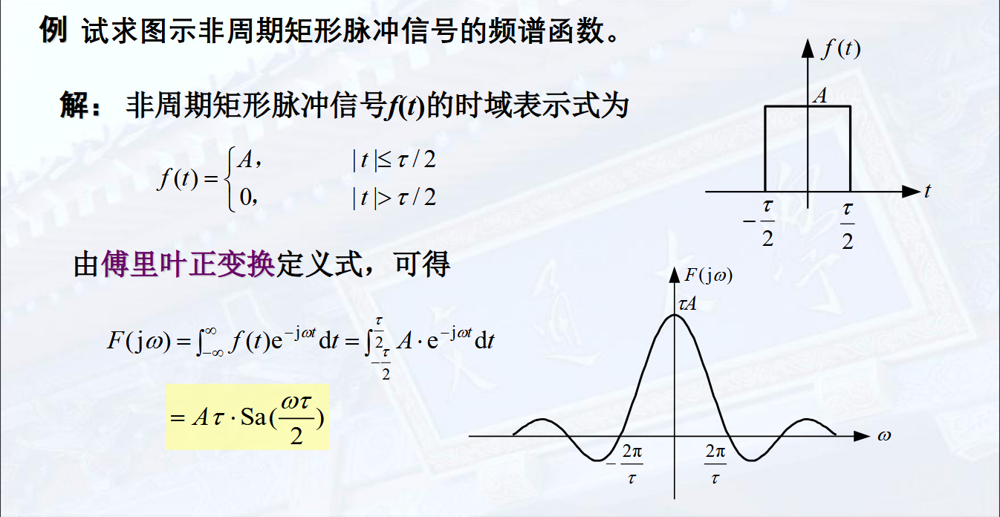

LTI 系统的频域分析 - 数学原理
阅读信息
2225 字 16 分钟 本页总访问量 加载中...
我们发现，指数信号经过 LTI 系统之后仍然为指数信号，仅系数发生变化。
例如，\(\mathrm{e}^{\mathrm{j} \omega t}\) 经过系统 \(h(t)\), 结果为
我们把 \(\displaystyle H(\mathrm{j} \omega) = \int_{-\infty}^\infty h(\tau) \mathrm{e}^{-\mathrm{j} \omega t}\mathrm{d}t\) 称为 \(h(t)\) 的傅里叶变换 (一个与 \(t\) 无关的常数)。
在实际求解中，不用显式地求 \(H(s)\), 而是用其它方法求得。
信号的频域分解
由上面的思路，将输入 \(f\) 分解成指数信号的线性组合，即可更加方便地求得。
平稳的信号 (周期信号) 分解为虚指数信号 \(\mathrm{e}^{\mathrm{j} \omega t}\) 的组合 → 傅里叶变换
截断或者发散的信号 分解为复指数信号 \(\mathrm{e}^{st}\) 的组合 → 拉普拉斯变换
周期信号的傅里叶级数展开
周期为 \(\displaystyle T = \frac{2\pi}{\omega}\) 的连续时间周期信号 \(f\), 可以展开为指数函数集 \(\{\exp(\mathrm{j}n\omega t)\}, n = 0, \pm 1, \pm 2, \ldots\) 的线性组合，即指数形式的傅里叶级数
该指数函数集具有正交性：\(\displaystyle \int_T \mathrm{e}^{\mathrm{j}n\omega t} \mathrm{e}^{\mathrm{j}m\omega t}\mathrm{d} t = \begin{cases}T ,& n = m \\ 0, & n \neq m\end{cases}\)
为求 \(C_n\), 计算积分
即可，\(\displaystyle C_n = \frac{1}{T}\int_T f(t) \mathrm{e}^{-\mathrm{j}n\omega t}\mathrm{d}t\)
符号解释
\(\displaystyle \int_T\) 为任意长度为 \(T\) 区间上的积分
作为信号，我们称 \(\omega\) 为基波角频率， \(\displaystyle f = \frac{\omega}{2\pi}\) 为基波频率， \(C_0\) 为直流分量
\(n = \pm N\) 的基波频率为 \(Nf\), 两项合起来为信号的 \(N\) 次谐波分量。
实信号展开为三角形式傅里叶级数
若 \(f\) 为实函数，有
令 \(\displaystyle C_n = \frac{a_n - \mathrm{j}b_n}{2}\)，则 \(\displaystyle C_{-n} = \frac{a_n + \mathrm{j}b_n}{2}\)，原式化为
后者被称为带初始相位的纯余弦形式
周期信号可以展开为傅里叶级数的充分条件
Dirichlet 条件:
- 在任何周期内绝对可积
- 在一个周期内只有有限个有限的不连续点，且这些不连续点的值有限
- 在一个周期内只有有限个极大值和极小值
Gibbs 现象
傅里叶级数在逼近方波信号的时候会出现在间断点出现非一致收敛；但是能依能量收敛。
实信号的频谱及其特征
对相同周期的周期信号，傅里叶级数的各个谐波频率是相同的，只有 \(C_n\) 不同，因此仅用 \(C_n\) 即可研究周期函数的全部性质。我们把 \(C_n\) (关于 \(n\)/频率 的函数 ) 称为频谱函数
对于指数形式傅里叶级数，\(C_n = \vert C_n \vert \exp(\mathrm{j} \varphi_n)\), 分别称为幅度频谱 和 相位频谱
对于实信号的纯余弦形式 \(f = a_0 / 2 + \sum A_n\cos(n\omega t + \varphi_n)\), 分别称为幅度频谱 (\(a_0 / 2, A_n\)) 和 相位频谱 (\(\varphi\))
一些例子

Parseval 功率守恒定理
代入指数形式傅里叶级数并且展开即可.
物理意义：任意周期信号的平均功率 (一般不考虑瞬时功率) 等于信号所包含的直流、基波以及各次谐波的平均功率之和。
\(\vert C_n \vert^2\) 随 \(n\omega\) 称为周期信号的功率频谱 (一般仪器的结果)
例题

这里有效带宽包含负的频率，也即要计算 \([-40\pi, +40\pi]\) 的所有 \(C_n\) 的平方和
上面的例子在各种 \(\tau / T\) (占空比) 中，有效带宽的谐波分量平均功率基本都在 \(90\%\) 左右。
连续非周期信号的频谱
我们发现，当周期 \(T\) 不断增加的时候，\(\omega_0\) 减小。谐波之间的频率间隔为 \(\displaystyle \Delta f = \frac{1}{T}\), 则在频率为 \(n\omega_0\) 谐波处单位频率的谐波振幅为 \(\displaystyle\rho(n\omega_0) = C_n / \Delta f = TC_n = \int_T f_T(t)\exp(-\mathrm{j}n\omega_0 t) \mathrm{d}t\) 与 \(T\) 无关！
傅里叶变换和频谱函数
因此如果我们把非周期函数表示为周期为无穷大的函数，则 \(\omega\) 变成 \(0\), 谐波频率连续，在 \(\omega\) 处的谐波振幅密度为 \(\rho(\omega) = \int_T f_T(t) \exp(-\mathrm{j}\omega t)\mathrm{d}t\)
\(F(\mathrm{j}\omega)\) 是单位频率上的信号频谱，称为非周期信号的频谱密度函数，简称频谱函数
傅里叶变换和傅里叶级数之间的关系
取 \(f(t) \leftrightarrow F(\mathrm{j}\omega)\), \(f_T(t)\) 是 \(f(t)\) 的周期性延拓。则有
因此
代入傅里叶反变换表达式，有
另一种计算方法：
在傅里叶变换中，我们使用 \(F_n\) 代替 \(C_n\) 做记号，表示 \(f_T(t)\) 的傅里叶级数的系数
满足关系：
这里 \(F_n\) 对应的函数是原非周期函数通过周期为 \(T\) 的重复相加而来的.
可见，信号在时域进行周期性延拓，延拓信号的频谱是原信号频谱的冲激序列采样
例题

求该周期信号的傅里叶级数.
由于单个峰的函数值可以表示为 \(G_2(1) \otimes G_2(1)\), 得到其傅里叶变换 \(F(\mathrm{j}\omega) = 4\mathrm{Sa}^2(\omega)\). 根据上面的式子,
傅里叶反变换
由上面的性质，
可以用符号记为 \(\displaystyle f(t) \overset{F}{\longleftrightarrow}{F(\mathrm{j}\omega)}\)
例题

最好也要记忆一下！
一些性质
- 信号在时域有限，则在频域将无限延续
- 矩形信号的频谱分量主要集中在零频到第一个过零点之间 (主瓣)，工程中往往将此宽度作为有效带宽。
- 脉冲宽度 \(\tau\) 越窄，有限带宽越宽，高频分量越多。即信号信息量大、传输速度快，传送信号占用的频带越宽。
- 偶函数的傅里叶变换为偶的实函数，奇函数的傅里叶变换为奇的纯虚函数
- \(f \rightarrow F(\mathrm{j}\omega) \Rightarrow f' \rightarrow F(\mathrm{j}\omega)\cdot \mathrm{j}\omega\)
常见非周期信号的频谱
单边指数信号 \(f(t) = \mathrm{e}^{-at}u(t)\), 有 \(\displaystyle F(\mathrm{j}\omega) = \frac{1}{a + \mathrm{j\omega}}\)
双边指数信号 \(f(t) = \mathrm{e}^{-a \vert t \vert}\), 有 \(\displaystyle F(\mathrm{j}\omega) = \frac{1}{a + \mathrm{j\omega}} + \frac{1}{a - \mathrm{j\omega}} = \frac{2a}{a^2 + \omega^2} \in \mathbb{R}\)
单位冲激信号 \(f(t) = \delta(t)\), 有 \(F(\mathrm{j}\omega) = 1\) 与 \(\omega\) 无关！
冲激偶信号 \(f(t) = \delta'(t)\), 有 \(F(\mathrm{j}\omega) = \mathrm{j}\omega\)
直流信号 \(f(t) = 1\), 由于 \(\displaystyle \frac{1}{2\pi} \int_{-\infty}^{\infty}2\pi \delta(\omega) \exp(\mathrm{j}\omega t)\mathrm{d}t = 1\), 有 \(F(1) = 2\pi \delta(\omega)\)
符号函数信号 由于 \(\displaystyle F(\mathrm{sgn}(t)\exp(-\sigma \vert t \vert)) = - \frac{1}{\sigma - \mathrm{j}\omega} + \frac{1}{\sigma + \mathrm{j}\omega}\), 令 \(\sigma = 0\) 有 \(\displaystyle F(\mathrm{sgn}(t)) = \frac{2}{\mathrm{j}\omega}\) 为奇的纯虚函数
单位阶跃信号 \(u(t) = 1/2 + 1/2 \cdot \mathrm{sgn}(t)\), 由傅里叶变换的线性性，\(\displaystyle F(u(t)) = \pi \delta(\omega) + \frac{1}{\mathrm{j}\omega}\) (不要忘记 \(1/2\) 的傅里叶变换！)
常见周期信号的频谱
虚指数信号 \(\mathrm{e}^{\mathrm{j}\omega t}\): 注意到 \(\displaystyle \int_{-\infty}^{\infty}1 \cdot \exp(-\mathrm{j} \omega t)\mathrm{d}t = 2\pi \delta(\omega)\), 有 \(\displaystyle F(\mathrm{e}^{\mathrm{j}\omega t}) = \int_{-\infty}^{\infty}1 \cdot \exp(-\mathrm{j} (\omega - \omega_0) t)\mathrm{d}t = 2\pi \delta (\omega - \omega_0)\)
余弦信号 \(F(\cos \omega_0 t) = \pi (\delta(\omega - \omega_0) + \delta(\omega + \omega_0)))\)
正弦信号 \(F(\sin \omega_0 t) = \mathrm{j}\pi(\delta(\omega + \omega_0) - \delta(\omega - \omega_0))\)
一般周期信号 \(\displaystyle f_T(t) = \sum_{n = -\infty}^{\infty}F_n \exp(\mathrm{j}n\omega_0 t), \omega_0 = \frac{2\pi}{T}\), 有 \(\displaystyle F(f_T(t)) = \sum_{n = -\infty}^{\infty}F_n F(\mathrm{e}^{\mathrm{j}n\omega_0 t})\)
单位冲激序列 \(\displaystyle\delta_T(t) = \sum_{n = -\infty}^{\infty}\delta(t - nT) = \frac{1}{T}\sum_{n = -\infty}^{\infty}\mathrm{e}^{\mathrm{j}n\omega_0 t}\), 有 \(\displaystyle F(\delta_T(t)) = \omega_0 \sum_{n = -\infty}^{\infty} \delta(\omega - n\omega_0)\) 在傅里叶变换下形状不变！
傅里叶变换的性质
线性性
(不写了)
时域卷积特性
若 \(\displaystyle f_1(t) \overset{F}{\longleftrightarrow}{F_1(\mathrm{j}\omega)}, f_2(t) \overset{F}{\longleftrightarrow}{F_2(\mathrm{j}\omega)}\), 有
傅里叶变换将时域卷积转换成频域相乘！
还有一种理解方法
例题
这里 \(\displaystyle G_\tau(t) = \begin{cases}1, &\quad -\tau / 2 \leq t \leq \tau / 2 \\ 0, &\quad \text{others} \end{cases}\) 是门函数
三角波信号是方波信号的自身卷积
频域卷积特性 (调制特性)
傅里叶变换将时域相乘转换成频域卷积！
在收音机调制的过程中，载波的频率往往不发生改变，即 \(f_2(t) = \exp(\mathrm{j}\omega t)\), 即有：
频移特性
相当于乘以指数信号之后，频谱向右搬移了 \(\omega_0\). 推论：
例子
对于 \(f(t) \cos \omega_0\), 其载波频率为 \(\omega_0\), 其频谱可以表示为两个 \(\mathrm{Sa}\) 函数，可知其频率为 \(\omega_0\); 但是在 \(\omega_0\) 周围仍旧有频谱值，此现象称为频率泄露
展缩特性
该方式不是线性时不变的变换，只能用定义式证明
时移特性
注意到傅里叶变换的指数项 (理解为相位) 的变化随频率增大而增大
证明
互易对称特性
若 \(\displaystyle f(t) \overset{F}{\longleftrightarrow}{F(\omega)}\), 则 \(\displaystyle F(t) \overset{F}{\longleftrightarrow}{2\pi f(-\omega)}\)
例子
有
虚实奇偶特性
若 \(\displaystyle f(t) \overset{F}{\longleftrightarrow}{F(\omega)}\), 则
- \(\displaystyle f(-t) \overset{F}{\longleftrightarrow}{F(-\omega)}\)
- \(\displaystyle \overline{f(t)} \overset{F}{\longleftrightarrow}{\overline{F(-\omega)}}\)
- 当 \(f(t) \in \mathbb{R}\) 时, \(F(\omega) = \overline{F(-\omega)}\), 也即 \(F(\omega)\) 的实部和模长是偶函数，虚部和辐角是奇函数.
时域微分特性
使用冲激偶信号证明
由于 \(f'(t) = f(t) \otimes \delta'(t)\) 且 \(\delta'(t) \overset{F}{\longleftrightarrow}{\mathrm{j}\omega}\) 即证.
例题
只要若干次导数得到冲激信号即可用此方法求得傅里叶变换
积分特性
若 \(\displaystyle f(t) \overset{F}{\longleftrightarrow}{F(\mathrm{j}\omega)}\),
频域微分特性
帕什瓦尔能量守恒定理 (Parseval theorem)
把函数 \(\displaystyle G(\omega) = \frac{1}{2\pi} \vert F(\mathrm{j}\omega) \vert^2\) (单位角频率的信号能量) 为能量频谱密度函数
一般地
对两个函数 \(x(t), y(t)\), 其时域上的内积 \(\displaystyle \langle x, y\rangle_t = \int_{-\infty}^{\infty}x(t)\overline{y(t)}\mathrm{d}t\). 则有
推导
例题
计算 \(\displaystyle \int_{-\infty}^{\infty}\mathrm{Sa}^2(t)\mathrm{d}t\).
由于 \(\mathrm{Sa}(t) \overset{F}{\longleftrightarrow}{\pi G_2(\omega)}\),
计算 \(\displaystyle \int_{-\infty}^{\infty}\mathrm{Sa}(t)\mathrm{d}t\)
相当于 \(\omega = 0\) 的直流分量，
离散信号的频域分析
离散周期信号的傅里叶级数 (DFS)
对于周期为 \(N\) 的周期信号 \(x[n]\), 有
由此可见离散时间周期信号的频谱是周期的 (\(N\))
例题
考虑一个方波信号，其周期为 \(N\) ，持续时间为 \(2N_1+1\), 有
包络具有 \(\displaystyle \frac{\sin \beta x}{\sin x}\) 的形状
离散时间非周期信号的傅里叶变换
类似连续时间信号我们给出傅里叶变换 (DTFT) 和反变换：
离散时间序列 \(x[n]\) 可以分解为频率在 \(2\pi\) 区间上分布的、幅度为 \(\displaystyle \frac{1}{2\pi}X(\mathrm{e}^{\mathrm{j}\omega }) \mathrm{d}\omega\) 的负指数分量的线性组合.
离散时间非周期信号傅里叶变换的收敛问题
当 \(x[n]\) 是无限长序列时，\(X(\mathrm{e}^{\mathrm{j}\omega })\) 作为无限长级数有收敛问题
两个充分条件：
若 \(x[n]\) 绝对可和，则 \(x[n]\) 的傅里叶变换存在且一致收敛于 \(X(\mathrm{e}^{\mathrm{j}\omega })\) → 幅度差 \(\to 0\)
若 \(x[n]\) 不绝对可和，而是平方可和，则其傅里叶变换以均方差为零的方式收敛于 \(X(\mathrm{e}^{\mathrm{j}\omega })\) → 能量差 \(\to 0\)
常用信号的离散时间傅立叶变换
单位冲激信号 \(x[n] = \delta[n]\), 有 \(X(\mathrm{e}^{\mathrm{j}\omega }) = 1\), \(\delta[n - n_0] \overset{F}{\longleftrightarrow}{\mathrm{e}^{- \mathrm{j}\omega n_0}}\)
矩形脉冲 宽度为 \(2N_1\) 时，有 \(\displaystyle X(\mathrm{e}^{\mathrm{j}\omega }) = \frac{\sin(2N_1 + 1)\omega / 2}{\sin \omega / 2}\)
实指数序列 \(x[n] = a^n u[n], \vert a \vert < 1\)，有 \(\displaystyle X(\mathrm{e}^{\mathrm{j}\omega }) = \frac{\mathrm{e}^{\mathrm{j}\omega}}{\mathrm{e}^{\mathrm{j}\omega} - a}\). 其模长和相位 \(\displaystyle \vert X(\mathrm{e}^{\mathrm{j}\omega })\vert = 1 / \sqrt{1 + a^2 - 2a \cos \omega},\ \arg X(\mathrm{e}^{\mathrm{j}\omega }) = -\arctan \frac{a \sin \omega}{1 - a\cos \omega}\)
非因果实指数序列 \(x[n] = a^n u[-n], \vert a \vert > 1\)，有 \(\displaystyle X(\mathrm{e}^{\mathrm{j}\omega }) = \frac{1}{1 - a^{-1}\mathrm{e}^{\mathrm{j}\omega}}\)
双边指数序列 \(x[n] = a^{\vert n\vert}, \vert a \vert > 1\)，有 \(\displaystyle X(\mathrm{e}^{\mathrm{j}\omega }) = \frac{a\mathrm{e}^{\mathrm{j}\omega}}{1 - a\mathrm{e}^{-\mathrm{j}\omega}} + \frac{1}{1 - a\mathrm{e}^{\mathrm{j}\omega}} = \frac{1 - a^2}{1 + a^2 - 2a \cos \omega}\)
常数序列 \(x[n] = 1\), 有 \(\displaystyle X(\mathrm{e}^{\mathrm{j}\omega }) = 2\pi \sum_{n = -\infty}^\infty \delta (\omega - 2\pi k)\) 是以 \(2\pi\) 为周期的冲激串
周期为 \(N\) 的单位样值序列 \(\displaystyle \delta_N[n] = \sum_{k = -\infty}^\infty \delta[n - kN]\), 有 \(\displaystyle X(\mathrm{e}^{\mathrm{j}\omega }) = \frac{2\pi }{N}\sum_{k = -\infty}^{\infty} \delta \left(\omega - \frac{2\pi}{N}k\right)\). (1)
离散时间周期指数信号 \(x[n] = \mathrm{e}^{\mathrm{j}\omega n}\)，有 \(\displaystyle X(\mathrm{e}^{\mathrm{j}\omega }) = \sum_{k = -\infty}^{\infty} 2\pi \delta(\omega - \omega_0 - 2\pi k)\)
离散时间余弦信号 \(x[n] = \cos \omega_0 n\), 有 \(\displaystyle X(\mathrm{e}^{\mathrm{j}\omega }) = \pi \sum_{k = -\infty}^{\infty} \delta(\omega + \omega_0 - 2\pi k) + \delta(\omega - \omega_0 - 2\pi k)\)
- 计算时先算傅里叶级数 \(\displaystyle \delta_N[n] = \frac{1}{N}\sum_{k = 0}^{N - 1}\exp\left(-\mathrm{j} \frac{2 \pi k}{N}n\right)\), 然后两边傅里叶变换即可
离散时间非周期信号傅里叶变换的性质
这里只写不同点
时移和频移
若 \(x[n] \longleftrightarrow X(\mathrm{e}^{\mathrm{j}\omega})\)
时间反转
滑动平均
把信号和高度为 1 的窗口卷积，能够使信号变得平滑。
表现在频谱上，表现为高频信号频谱减小，低频信号频谱增加。
频域微分
数学
取 \(t = 0\) 有